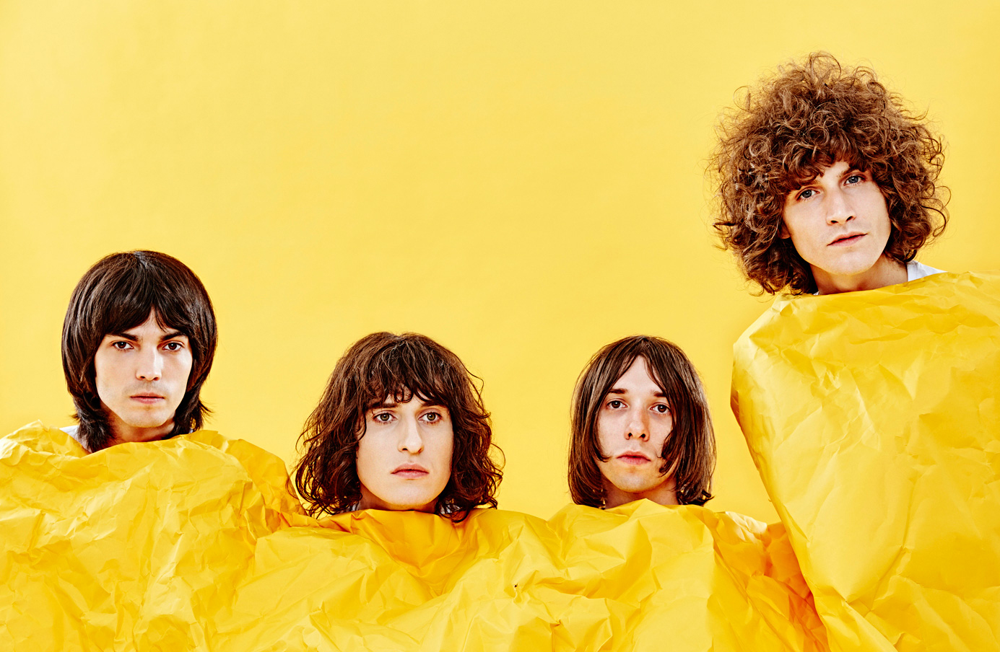

Temples are English rock band from England formed in 2012 by singer and guitarist James Bagshaw and bassist Tom Warmsley. The rest of the band is band up of the other two members, the keyboardist and rhythm guitarist Adam Smith, and the dummer Samuel Toms.
History
The band was initially formed as a home studio project in mid 2012. Warmsley and Bagshaw had known each other for years before these projects. It was at this point that they were in rival bands based in their hometown of Kettering. The duo had later worked together in The Moons, with Bagshaw also having sessioned with the Lightning Seeds and co-fronted another earlier Kettering band Sukie who formed in 2006 and charted at No 1 in the UK Indie Chart with their debut single "Pink-A-Pade". Sukie were featured in the fanzine "Siren", edited and created by Warmsley to document Kettering's music scene.
The duo uploaded four self-produced tracks to YouTube, which caught the attention of Heavenly Recordings founder Jeff Barrett, who agreed to release the band's debut single "Shelter Song" in November 2012. They then enlisted fellow Kettering resident drummer, Samuel Lloyd Toms (Secret Fix, ex-Koolaid Electric Company) and keyboard player Adam Smith and started rehearsing as a band, so they could play their songs live, having never played live as a band before. The band released their second single "Colours To Life" in June 2013.
In an interview with Sound of Boston, lead vocalist James Bagshaw noted that signing on to Heavenly Records did not change their recording process. "Nothing changed, everything stayed exactly the same... At no point did they say, you know, go into the studio. If they did, we probably wouldn’t have signed to them because we liked the idea of what we were doing," Bagshaw stated. Temples' personal gear during recording comes from various gear from Vox and Orange Amps, along with synthesizers like the Roland VK-8 Combo Organ.
Bagshaw also commented on the difficulty in selecting which tracks to release as singles. The melodic nature of "Mesmerise" was a main reason why Temples chose to release it as a single; "I guess melody is something that assigns a single because that’s the thing that people listen to. But for us, we always found it very hard to choose singles… it might not be commercially viable, but that one sounds more catchy," said Bagshaw.
Having played major UK and European festival and supported the likes of Suede, Mystery Jets, Kasabian and The Vaccines alongside select headline dates, the band announced their first headline UK tour to take place in October 2013. In November 2013, Temples announced their self-produced debut album, Sun Structures, which was released on 5 February 2014. The band embarked on a headlining tour around Europe, North America, and Australia. On 30 July 2014, the band performed for the first time on US television performing "Shelter Song" on The Tonight Show Starring Jimmy Fallon. Temples also performed "Shelter Song" on The Ellen Degeneres Show on 29 September 2014.
Their relative lack of airplay on major radio stations in the UK, especially BBC Radio 1, has been criticised by fellow musician and fan Noel Gallagher. The band debuted two new songs live in 2015, entitled 'Henry's Cake' and 'Volcano/Savior' respectively. The band confirmed that they were working on a new album via Instagram on 9 July 2015. The band spent much of the first half of 2016 recording new material before embarking on a number of European festival dates. On 26 September 2016 the band announced a new single, "Certainty".

Temples in their most recent photo posting
They released their second studio album, Volcano, on 3 March 2017. In June 2017 Temples released their new single 'Henry's Cake' - which is not on their second studio album 'Volcano.'